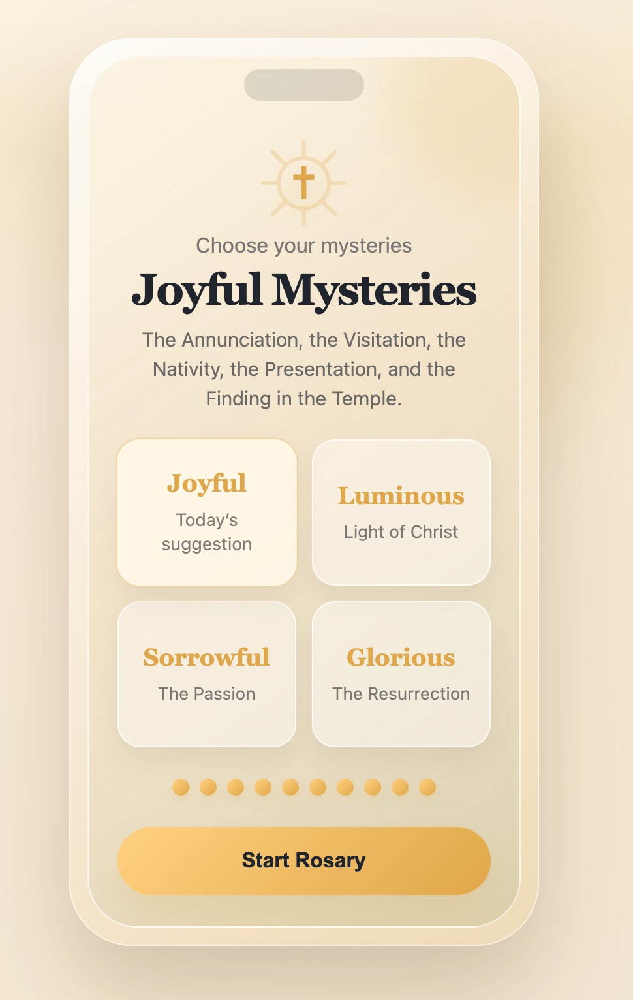

Guided Rosary
Follow each prayer clearly, with optional audio guidance when you want a hands-free prayer experience.
A peaceful Catholic prayer companion
Choose your mysteries, follow each bead, and stay focused in prayer with a simple guided Rosary app designed to feel quiet, warm, and distraction-free.

Simple, focused, prayer-first
Beadlight keeps the experience clear: select a mystery, begin the Rosary, and move through each prayer without visual clutter.
Follow each prayer clearly, with optional audio guidance when you want a hands-free prayer experience.
See where you are in the Rosary, bead by bead, so you can stay focused rather than keep count.
Choose Joyful, Luminous, Sorrowful, or Glorious Mysteries with a simple daily suggestion.
Use gentle background sound to create a calmer prayer space when you need fewer distractions.
Built around calm focus
The design uses parchment tones, soft gold, and large readable cards so the app feels reverent without becoming complicated.
View the roadmap →Built for people who want a beautiful Rosary app without clutter, noise, or unnecessary features.
Choose the mysteries you want to pray.
Start the Rosary and follow each prayer.
Pray bead by bead with a calm screen and optional guidance.
Ready to begin?
Download Beadlight and start with a simple, focused Rosary experience.